UK / Europe Tour 2018 RUSALKA - THE RITA - MK9

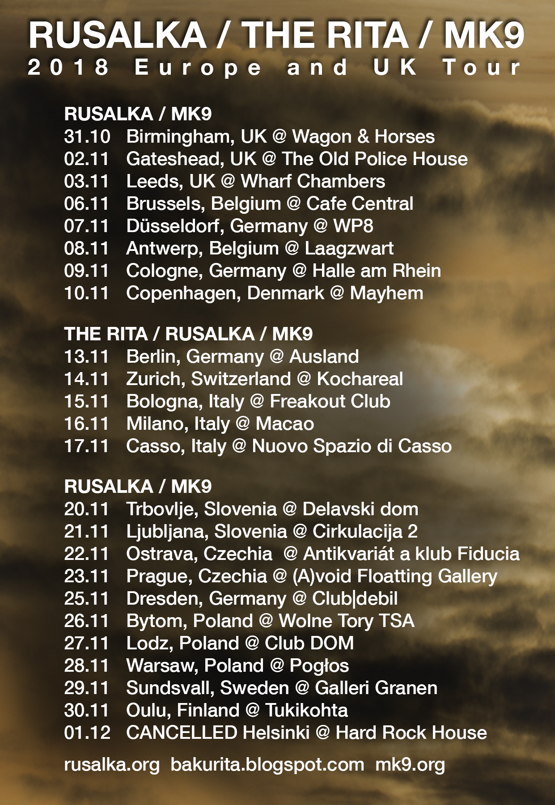
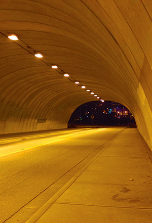
RUSALKA / MK9
31.10 Birmingham, UK @ Wagon & Horses - Event page with Khost, Steckdose, DJ Max Simpson
02.11 Gateshead (Newcastle), UK @ The Old Police House - Event Page with Plastiglomerate/SW1N-Hunter
03.11 Leeds, UK @ Wharf Chambers - Event Page with Mondo Sadists
06.11 Brussels, Belgium @ Cafe Central - Event Page
07.11 Dusseldorf, Germany @ WP8 - Event Page
08.11 Antwerp, Belgium @ Laagzwart - Event Page with Praying For Oblivion
09.11 Cologne, Germany @ Halle am Rhein - Event Page with Wince, Absterbende
10.11 Copenhagen, Denmark @ Mayhem - Event Page with Knækkede Stemmer, Carnal Exhibition, Clinical Trails
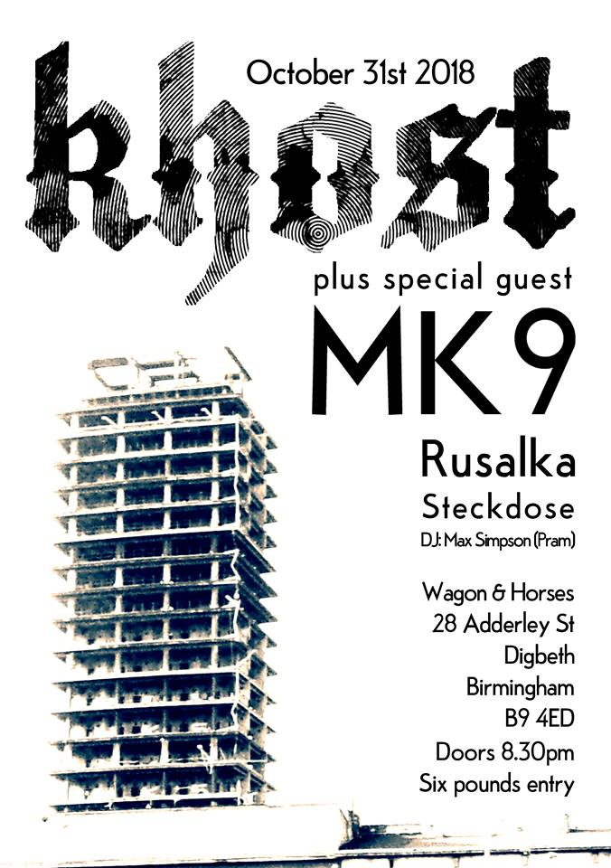
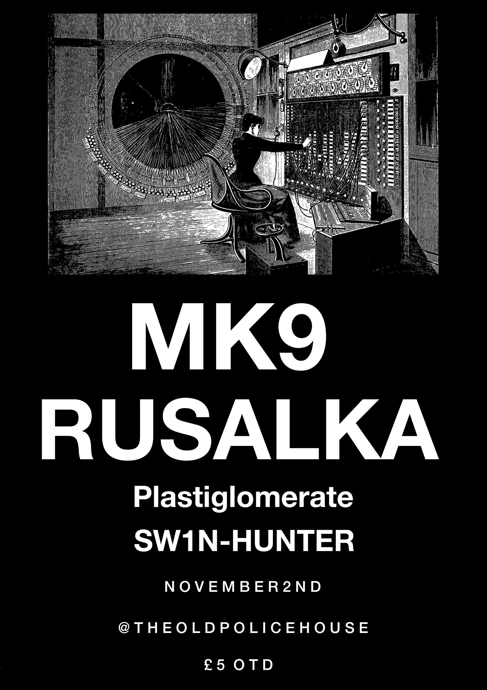
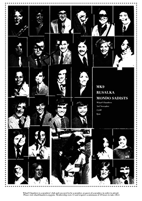
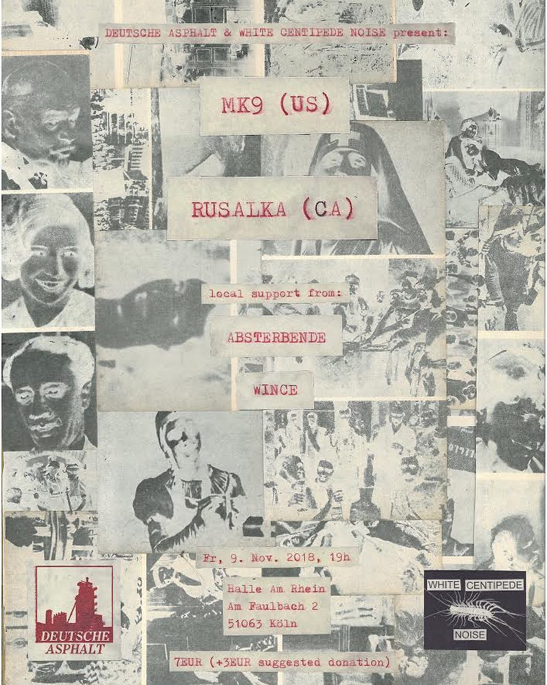
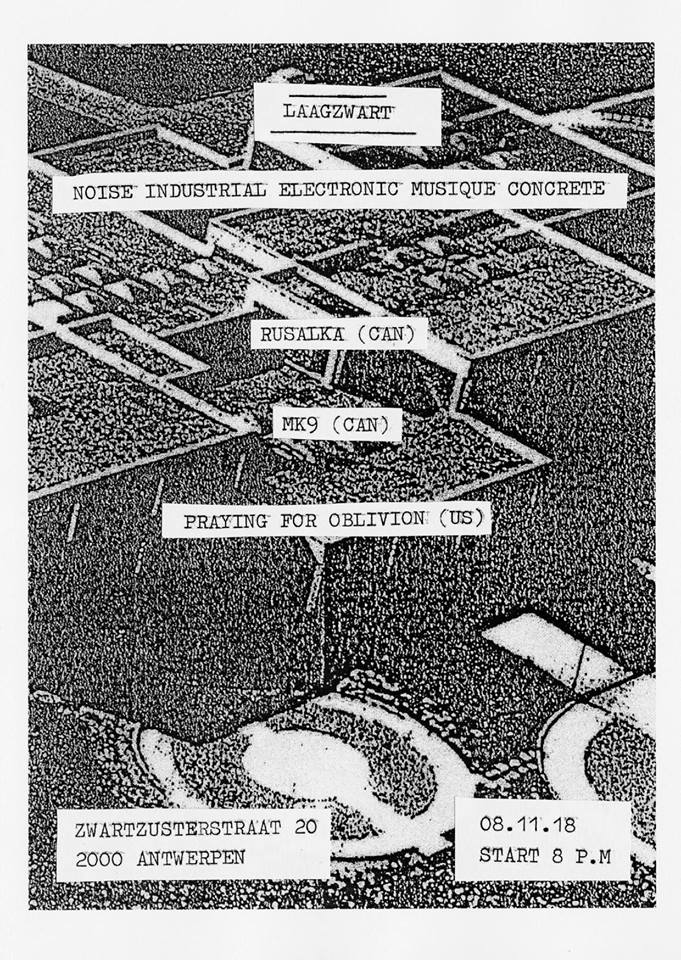
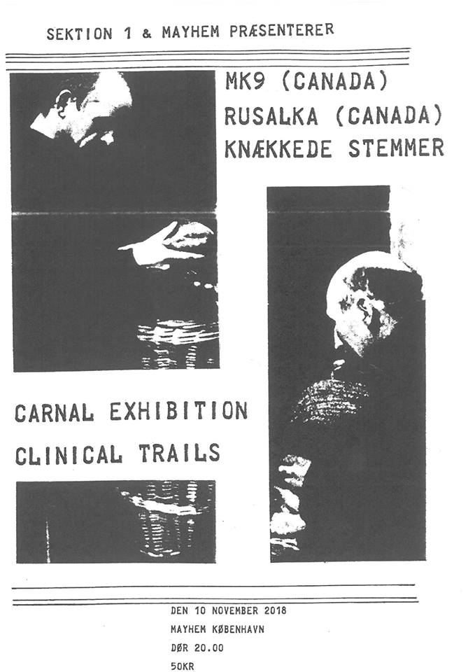
THE RITA / RUSALKA / MK9
13.11 Berlin, Germany @ Ausland - Event page
14.11 Zurich, Switzerland @ Kochareal - Event Page
15.11 Bologna, Italy @ Freakout Club - Event Page with Vomir
16.11 Milano, Italy - Macao - Event Page with Vomir, Fecalove
17.11 Casso, Italy @ Nuovo Spazio di Casso - Event Page with Fukte vs Molestiaa Auricularum
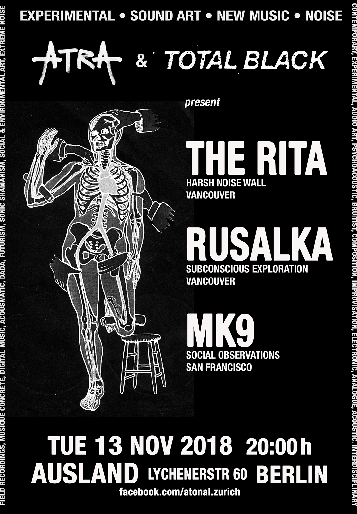
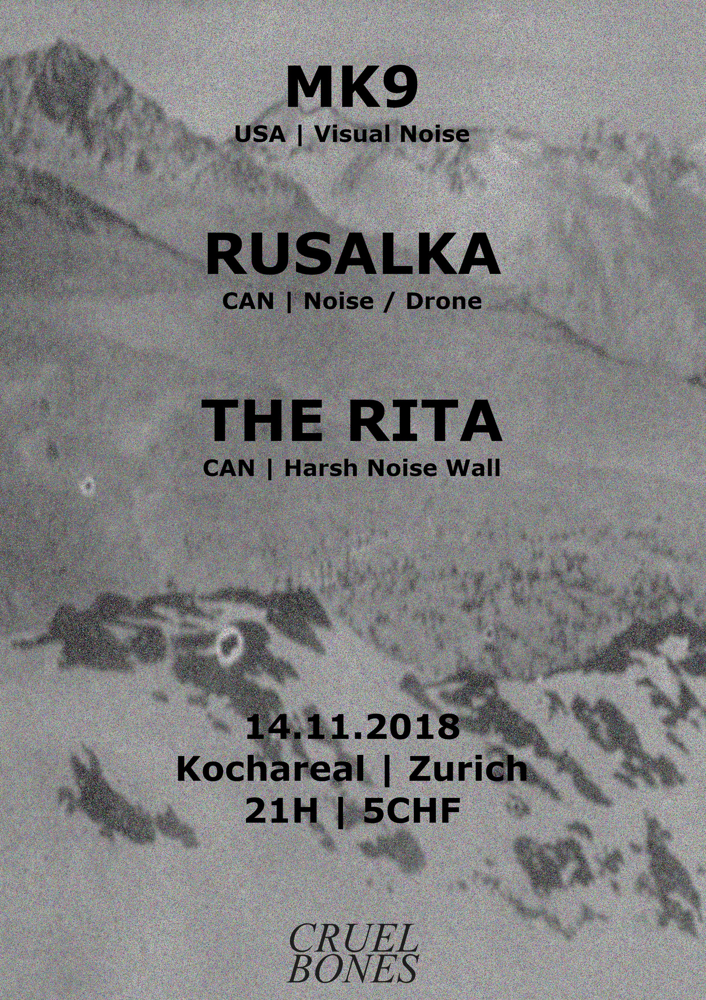
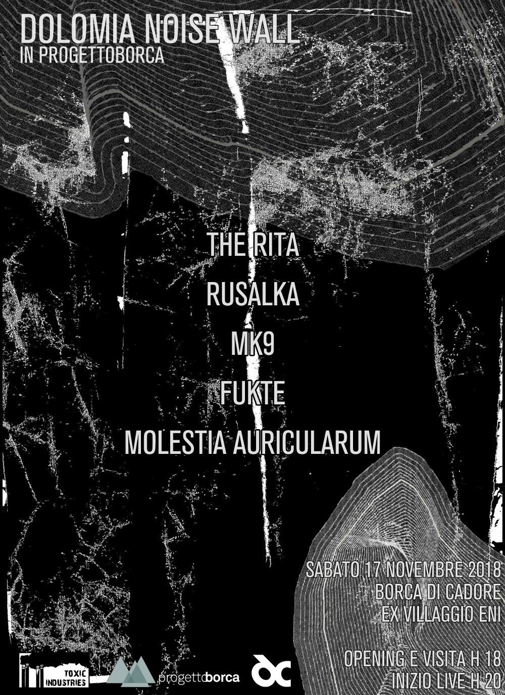
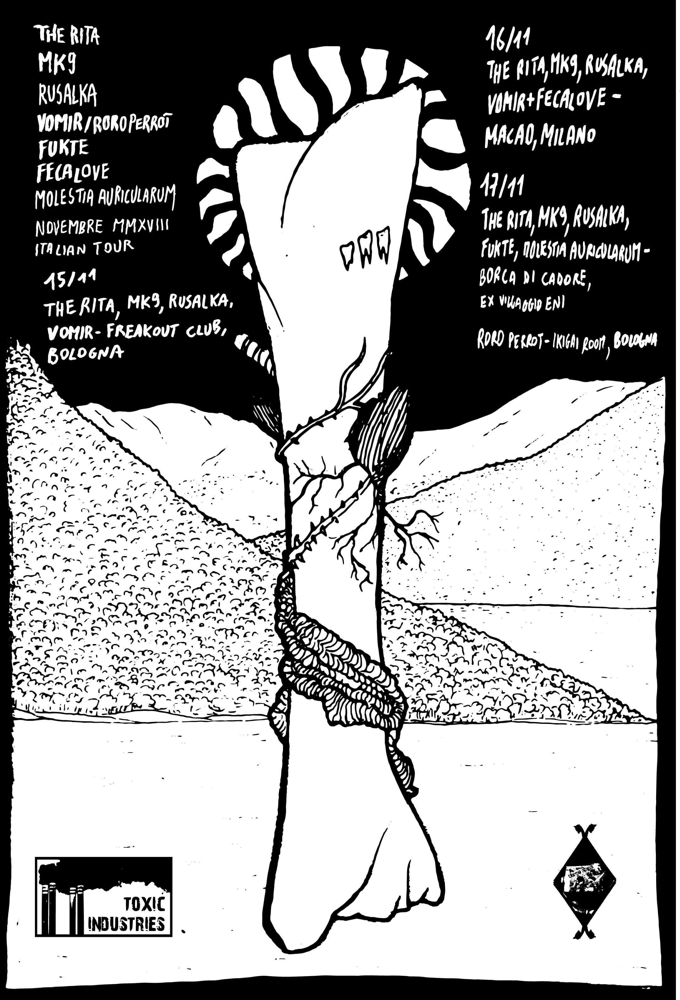
RUSALKA / MK9
20.11 Trbovlje, Slovenia @ Sound Chambers Series vol. VIII - Delavski dom - Event Page with Pol Mod Pol
21.11 Ljubljana, Slovenia @ Sound Chambers Series vol. VIII meets C2 - Cirkulacija 2 - Event Page with Pol Mod Pol
22.11 Ostrava, Czechia @ Antikvariát a klub Fiducia - Event Page with Improvisation by Paregorik, Ada and Saki
23.11 Prague, Czechia @ (A)void Floating Gallery - Event Page with Seismic Wave Factory, Dysnomia, Magadan
25.11 Dresden, Germany @ Club|debil
26.11 Bytom, Poland @ Wolne Tory TSA - Event Page with Emptyz
27.11 Lodz, Poland @ Club DOM - Event Page with Apogean
28.11 Warsaw, Poland @ Pogłos - Event Page
29.11 Sundsvall, Sweden @ Galleri Granen - Event Page with Galme
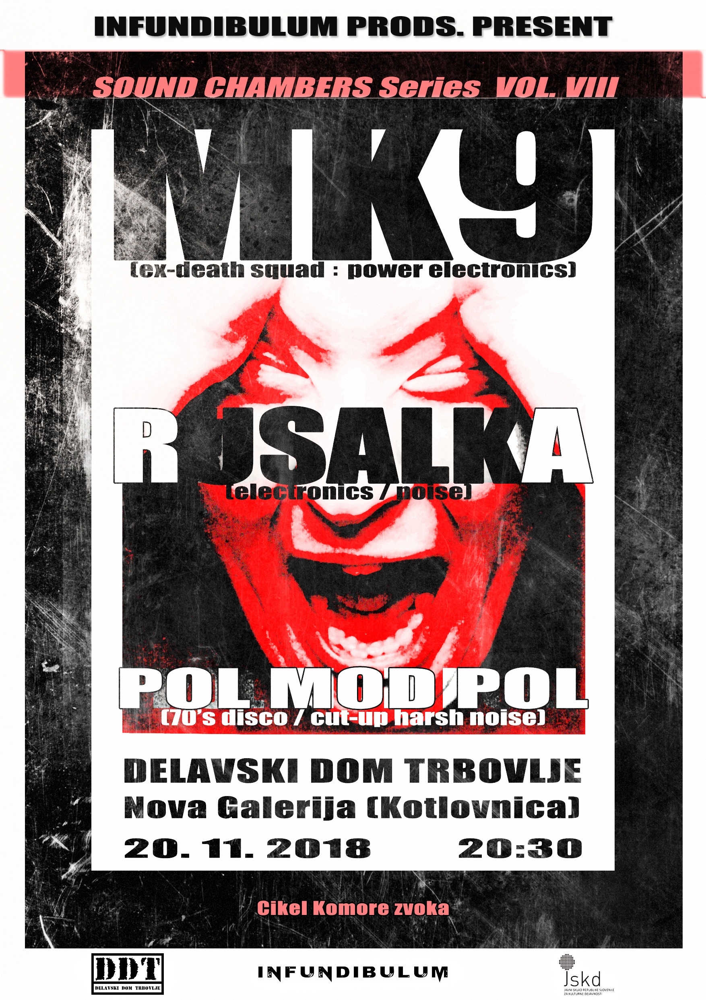

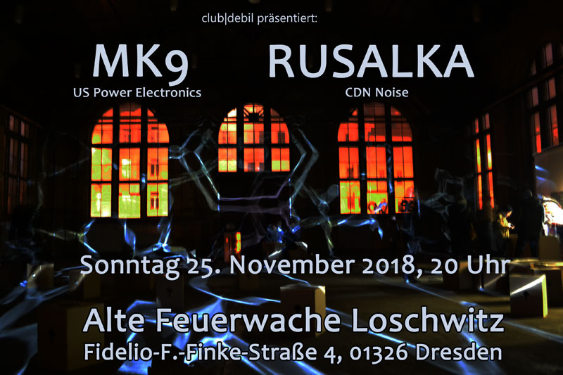
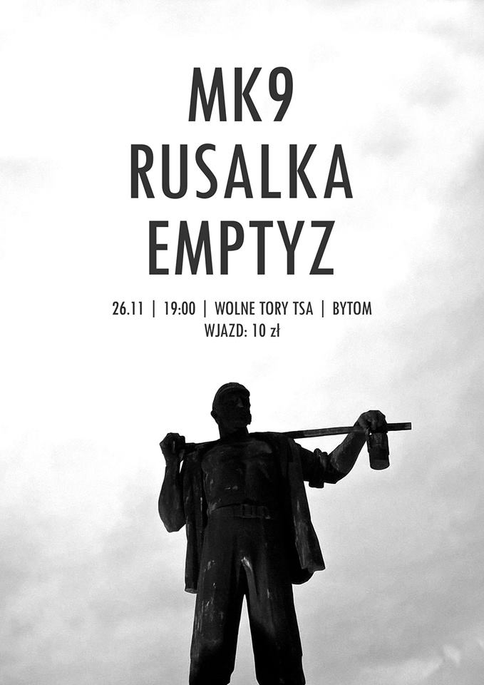
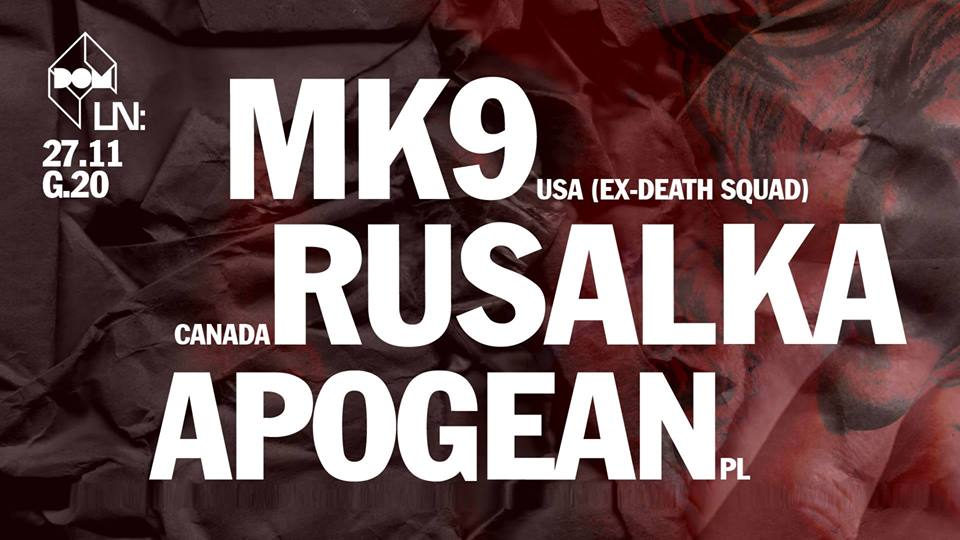
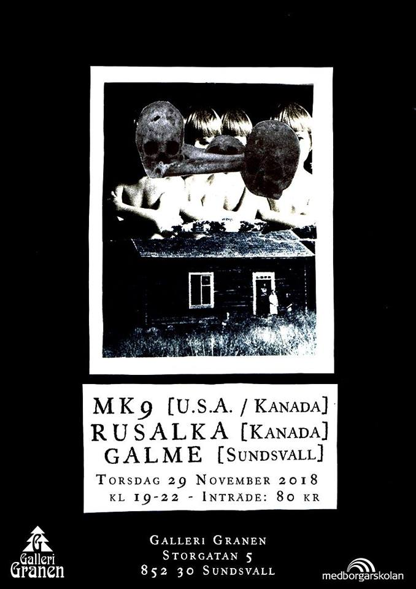
Project Bio-ographies
- RUSALKA -
Kate Rissiek is an artist based in Vancouver, Canada who has performed under the name
Rusalka since 2007. Employing theremin and other electronics, Rusalka achieves visceral
and at times, abrasive sounds in her exploration of subconscious states and the dark recesses
of human nature. A struggle between filth and transcendence occurs which stirs together crude
electronics and an ethereal electromagnetic grasp for emergence. Her recent work often features
subtle, yet profound, shifts in mood, timbre, and focus demonstrating a fervent refusal to
clearly delineate between introspection and observation.
http://rusalka.org/index.html
https://www.discogs.com/artist/1129917-Rusalka
https://www.instagram.com/kate_rusalka/
- THE RITA -
"With his flagship project, THE RITA, Sam McKinlay has, for over two decades, explored and distilled into sound
various permutations of fetish and vice. He is recognized as the creator of the harsh noise wall,
but that sound — massive and rich textural layers of relentless, monolithic fields of distortion — was nothing new,
in and of itself. It was McKinlay's conceptual intent and the singular intensity of his focus that established it as
something novel and profound. One recognizes in McKinlay's unwavering approach to his body of work the
obsessiveness of the fetishist. McKinlay's compulsive reverence for noise — for the unyielding, deliberate weight
of wall noise — is a fetish of sound. There is an aesthetic rigor often associated with the fetishization of form or
object. Seen through the eyes of the most focused and obsessed, fixations often manifest in a manner that is
highly refined, sculpted, concentrated, and even artistic. The line distinguishing the artist from the fetishist is
always blurry and often non-existent.
Though his musical approach has remained more or less consistent, the subject matter inspiring McKinlay's work
has periodically shifted through the years, mapping out the constellation of non-musical obsessions that occupy
his mind: sharks, drag racing, Giallo cinema, skateboarding, and snorkeling, to name just a few. Frequently,
McKinlay utilizes field recordings and other sounds sourced from the objects of interest before encrypting them in
an opaque shell of noise. Listening to McKinlay's recordings, it's often difficult to determine whether one actually
hears the sounds of the source material or if the power of suggestion is so strong in McKinlay's presentation that
the listener extracts phantom sounds from the chaotic rumble.
Harsh Noise Wall is arguably the terminal point of music itself, beyond which it's impossible to achieve
greater or more effective minimalism and abstraction. It is a pure, visceral sound, untethered from
intellectual and emotional composition."
https://www.discogs.com/artist/212478-The-Rita
http://bakurita.blogspot.ca/
- MK9 -
A sound and visual therapy project by Michael Nine that began in the latter half of 2001.
Preceding the end of the controversial and confrontational performances as the renowned project Death Squad.
Originally from San Francisco, California he now resides in Vancouver, Canada.
This ongoing project seeks to understand the irrational nature, behavior and motivation of the human species.
Performances include pre-constructed sound, video and live frequencies. Video, voice, sound and handouts
will be offered. Attempting to continually offer insights and investigate society on this planet.
At times our evolution seems to be at a standstill and becomes a counterproductive mire of redundancy
and backwards progress. Each of us tends to experience existence from a very small isolated window
that we look from into a much larger perceived reality.
https://mk9.org/
https://www.discogs.com/artist/451424-MK9
https://www.facebook.com/neuralops/
https://www.instagram.com/___mk9___/